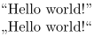
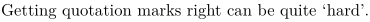

Contents
Summary
The instances of \delimitedtext add markup around a (usually short) block of text.
Instances
| \quotation | puts double quotation marks around the text inside the braces. The type of the quotation marks depends on the language setting |
| \quote | Quote text using the 'single quote' style of the current language. |
| \blockquote | |
| \speech | |
| \aside |
Settings instance
Description
These instances are defined by \definedelimitedtext and set up with \setupdelimitedtext. But there are also two predefined shortcut commands, so you can set up the \quote command with \setupquote and \quotation with \setupquotation.
Examples
Example 1
-
\language[en] \quotation{Hello world!} \language[de] \quotation{Hello world!}
- 
Example 2
-
Getting quotation marks right can be quite \quote{hard}.
- 
Notes
See also
Help from ConTeXt-Mailinglist/Forum
All issues with:
- \quotation on the mailing list (all results)
- \quotation on the mailing list (subject only)
- \quotation on stack exchange
- \quotation in ConTeXt's source
- \quote on the mailing list (all results)
- \quote on the mailing list (subject only)
- \quote on stack exchange
- \quote in ConTeXt's source
- \blockquote on the mailing list (all results)
- \blockquote on the mailing list (subject only)
- \blockquote on stack exchange
- \blockquote in ConTeXt's source